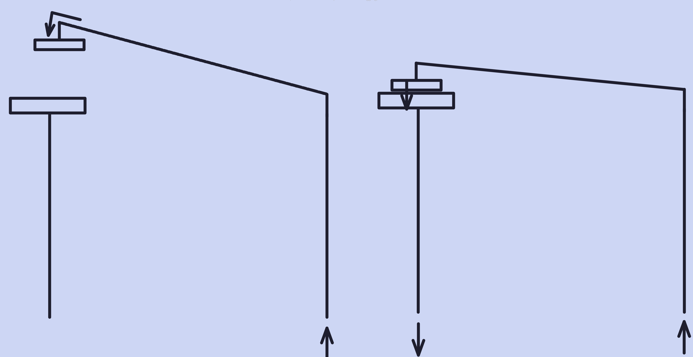
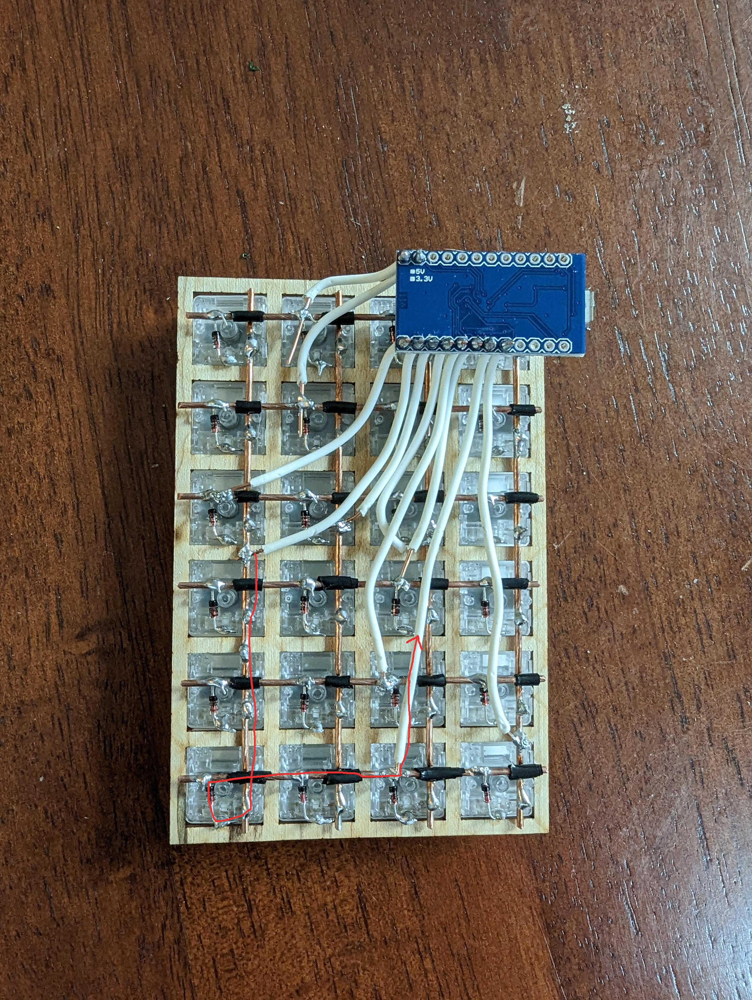
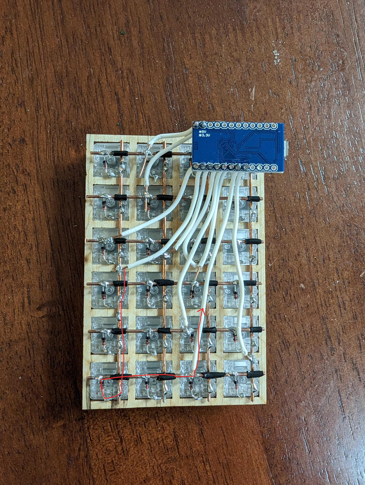
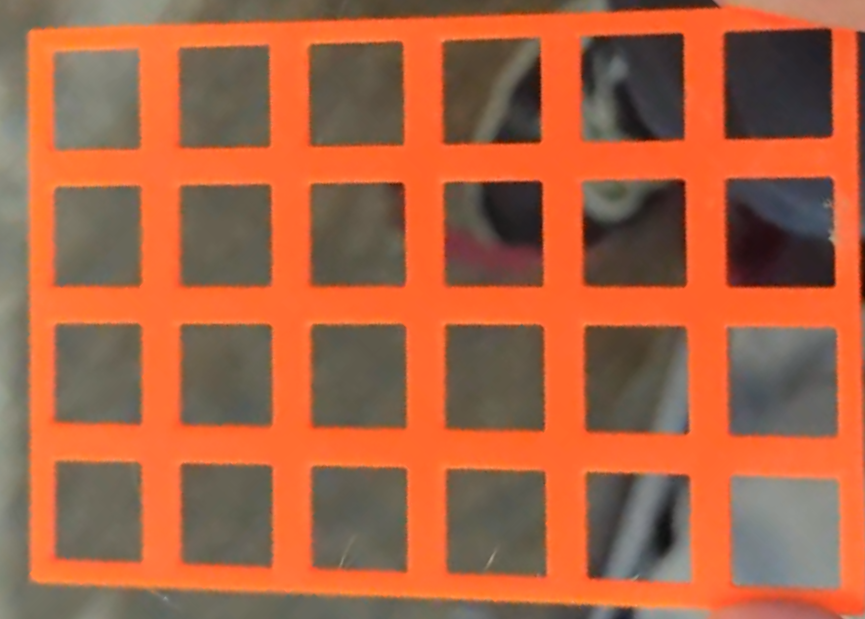
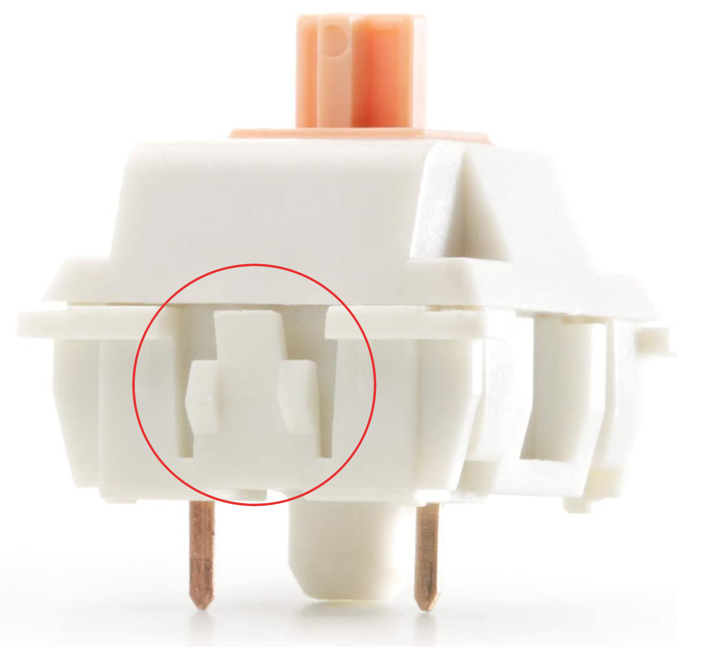
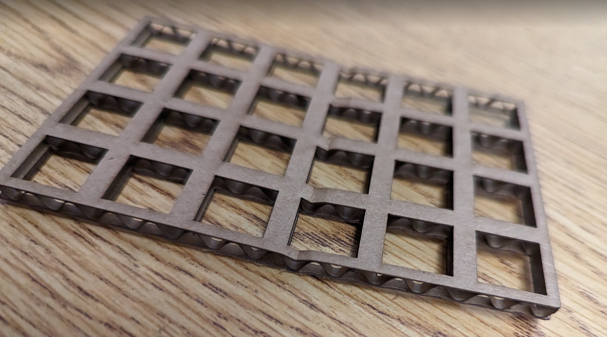
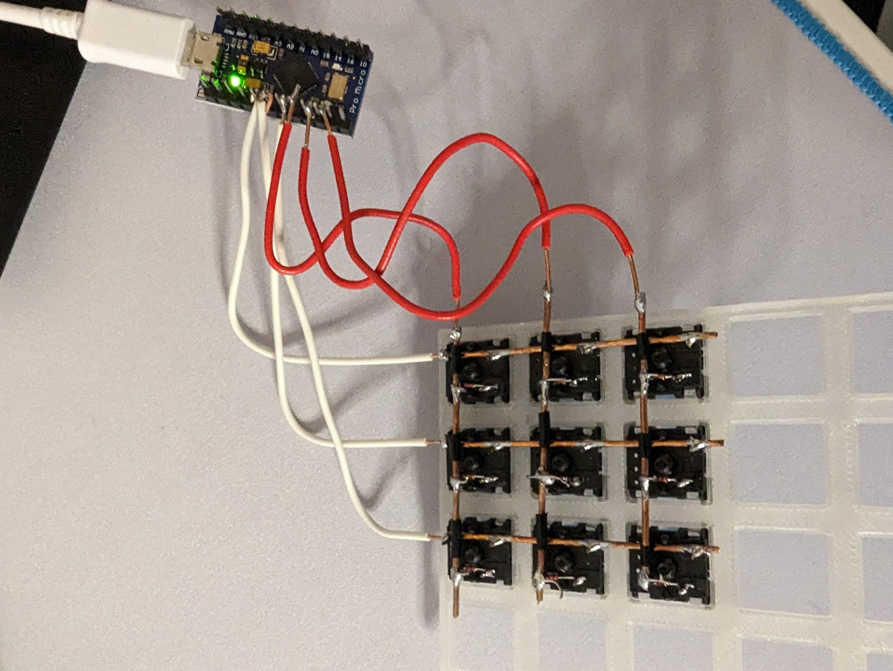

Orion
Andrews
Andrews
The
Design
3
Design
3
The design of the hardware for my calculator.
Hardware
Hardware was the area where I had the most iterations of
various parts of my calculator. This is where I designed the
case, keyboard, and the display and compute unit
configuration. Most of this is about the keyboard as it took
the longest, the other aspects of the design were really
just rote iteration.
The hardware design began when a screen I ordered on Amazon
arrived and I could begin to test how it fit with my
Raspberry Pi. It fit perfectly on top (as it should) and
even came with a heatsink for the CPU of the Raspberry Pi
and an active fan for cooling over the rest of the board,
more than I needed but a nice touch nonetheless. The screen
had a 3.5 inch diagonal and a 480x320 resolution, more than
necessary but again, a nice touch. The biggest issue that I
could see right away was the thickness. The screen stacked
on top of the already bulky Raspberry Pi lead to a thickness
of 22mm. That doesn't sound like a lot but it is not
comfortable to hold in your hand and bothered me from the
start.
Raspberry Pi started the screen in 1920x1080 for some reason and so (while it was nearly illegible) I went to change the resolution settings. 480x320 is not widely supported and so I did not find it as possible display output mode on the Raspberry Pi, a small setback but I could work through it. In general 3:2 aspect ratios are not commonly supported but there was a 720x480 resolution that I could use. I wanted to use a display output that maintains the same aspect ratio as the display so as to reduce blurriness.
The next time that I rebooted the Raspberry Pi, the display settings didn't stick. I thought it might have been a configuration issue and so I tried again to no avail.
Raspberry Pi started the screen in 1920x1080 for some reason and so (while it was nearly illegible) I went to change the resolution settings. 480x320 is not widely supported and so I did not find it as possible display output mode on the Raspberry Pi, a small setback but I could work through it. In general 3:2 aspect ratios are not commonly supported but there was a 720x480 resolution that I could use. I wanted to use a display output that maintains the same aspect ratio as the display so as to reduce blurriness.
The next time that I rebooted the Raspberry Pi, the display settings didn't stick. I thought it might have been a configuration issue and so I tried again to no avail.
This was when I started to get frustrated. I then decided to
go outside of the configuration menu that Raspberry Pi OS
gives you and I went to change the properties I wanted to
change through the command line. Raspbian (Raspberry Pi OS)
is a Linux distribution and so I knew that I would be able
to change display properties through a common command called
xrandr. I don't want to get into display managers and
general Linux-y stuff here becuase this isn't the sort of
project for it but I wanted to mention how I could change
the resolution.
Of course, this also didn't stick. Now I was pretty mad. I knew that somewhere there was a configuratino file that was overwriting my changes on boot but I couldn't figure it out. I then went looking for an autoexec file. These are files that have commands that get executed when different parts of the OS come into use. In Linux, there are a lot. bash.rc, the init.d directory, and rc.local are the main ones are Raspbian. There is also the option to create a directory in your Raspberry Pi's config that contains .desktop files. .desktop files are a way of integrating executables into you desktop environment. Anyways, I created one that pointed a script that change the resolution and it booted correctly first try. Crazy.
Of course, this also didn't stick. Now I was pretty mad. I knew that somewhere there was a configuratino file that was overwriting my changes on boot but I couldn't figure it out. I then went looking for an autoexec file. These are files that have commands that get executed when different parts of the OS come into use. In Linux, there are a lot. bash.rc, the init.d directory, and rc.local are the main ones are Raspbian. There is also the option to create a directory in your Raspberry Pi's config that contains .desktop files. .desktop files are a way of integrating executables into you desktop environment. Anyways, I created one that pointed a script that change the resolution and it booted correctly first try. Crazy.
Now I could get to putting my code onto the Rasberry Pi.
This was actually incredibly easy, I just made an SSH
connection with the Raspberry Pi and used a command called
rsync to copy the code over.
There was an issue though. The source code would work fine on the Raspberru Pi, but there were a lot of different configurations in Electron that would not work on the Raspberry Pi. The foremost of these is that the Raspberry Pi CPU architecture is ARM, not the x86 architechture that I was developing for on my laptop. In conjunction with this, the Raspberry Pi didn't even have Electron installed, or even Node (the framework that runs Electron). This was itself a debacle to fix but it was really just about executing the right commands, so I won't talk about it here. Now with Electron and Node installed, I was able to run commands to build my software for ARM. I got my executable and it ran perfectly the first time. There's no joke, it actually just worked.
There was an issue though. The source code would work fine on the Raspberru Pi, but there were a lot of different configurations in Electron that would not work on the Raspberry Pi. The foremost of these is that the Raspberry Pi CPU architecture is ARM, not the x86 architechture that I was developing for on my laptop. In conjunction with this, the Raspberry Pi didn't even have Electron installed, or even Node (the framework that runs Electron). This was itself a debacle to fix but it was really just about executing the right commands, so I won't talk about it here. Now with Electron and Node installed, I was able to run commands to build my software for ARM. I got my executable and it ran perfectly the first time. There's no joke, it actually just worked.
Now with the software on my Raspberry Pi, I edited my
bash.rc to automatically start executing my calculator
program on start and I was good to go. I plugged in a
keyboard and I was able to use the calculator for the first
time in an enclosed environment (in a software sens). The
feeling of gratification that I now had a system that was
designed to do one thing was immeasurable.
But then I had to move on to more pressing issues. I couldn't have a convincing calculator demo if the keyboard was 8 times larger than the Rasberry Pi and just plugged into a USB port, I needed to make my own. I had had some experience with mechanical keyboards in the past and I was drawn to them. I knew that it would be bulky but I had hope that I could create one that was only in excess size of the Rasberry Pi + screen combo in terms of length (that is to say, it would be smaller in every way except the edge that protrudes towards the user).
I quickly decided that the best-sized keyboard layout would be a 4x6 (4 columns, 6 rows). It would allow my the right number of keys to perform all of the keystrokes I thought would be necessary for a good demo (with some mod keys). However, I had an issue: keyboard PCBs in 4x6 don't exist. The closest I would be able to get would sacrifice 3 keys by extending the 0, enter, and plus symbol. So, I needed to make my own, or so I thought.
But then I had to move on to more pressing issues. I couldn't have a convincing calculator demo if the keyboard was 8 times larger than the Rasberry Pi and just plugged into a USB port, I needed to make my own. I had had some experience with mechanical keyboards in the past and I was drawn to them. I knew that it would be bulky but I had hope that I could create one that was only in excess size of the Rasberry Pi + screen combo in terms of length (that is to say, it would be smaller in every way except the edge that protrudes towards the user).
I quickly decided that the best-sized keyboard layout would be a 4x6 (4 columns, 6 rows). It would allow my the right number of keys to perform all of the keystrokes I thought would be necessary for a good demo (with some mod keys). However, I had an issue: keyboard PCBs in 4x6 don't exist. The closest I would be able to get would sacrifice 3 keys by extending the 0, enter, and plus symbol. So, I needed to make my own, or so I thought.
There are a couple of tutorials on the internet for creating
your own keyboard PCB and many more for general PCB design.
I spent a week having a look around and gather information
on the commonalities between multiple tutorials. I figured
that would give me a good understanding of the right
software to use and the right general practices for PCB
design. While this was ultimately fruitless as I realized it
would take far too long for far too little, it did teach me
an important concept in regards to the way that keyboards
work electrically.
The simplest way to get input from a keyboard would be to run a constant voltage through a wire on one side of a switch, and connect a wire to the other end of each switch, the idea being that when the switch is clicked, the circuit is completed. Here's a rough image of how that would work.
The simplest way to get input from a keyboard would be to run a constant voltage through a wire on one side of a switch, and connect a wire to the other end of each switch, the idea being that when the switch is clicked, the circuit is completed. Here's a rough image of how that would work.

This would work just fine, however, with 24 switches (4x6) and 2 wires per switch, I would need 48 connections to make this keyboard work. The solution to this is to create a keyswitch matrix and it is the thing I alluded to learning about during my stint with PCB design. The way a keyswitch matrix works is pretty simple. There are two pins per switch, let's call one a column pin and one a switch pin. For all of the switches in a given column, you connect all of their column pins together, and for all of the switches in a given row, you connect all of the row switches together. Then, on the software side, you would loop through all of the rows (or columns, it doesn't matter) and pull the voltage of the row connections low. Then, you would loop through all of the columns and pull each voltage high, but then resist new voltage coming in. This effectively stops "replenishing" the voltage and allows it to be sapped away if a given column is connected to the row we just pulled low.
With this, in almost an instant, you can see which row and column pair has a low voltage, giving you a "coordinate" of the current switch. This is complex to describe verbally so I will add another diagram in a bit. Anyways, the point is, I figured that I could make a switch matrix without a PCB to anchor it all in. I had a look on the internet and it turns out that this is actually quite common and the resulting product is called a handwired keyboard. There are many great videos on how to create a handwired keyboard but the process is really just to create a key matrix that exists outside of a PCB. Here is the diagram I mentioned I would show (spoilers, this is the back of the keyboard I made for my design exhibition and around the 5th iteration).
 

The black pieces on each row at an intersection with a column are pieces of electrical tape to prevent current from being able to flow directly to a column from a row without having to go through a switch.
Back to the narrative flow now. The first thing I would need
in order to create a functioning handwired keyboard would be
a switchplate (switches themselves are more important but I
already had plenty of them). The switchplate would hold all
of the switches together in a neat row and column alignment
and would provide general structural stability to the
keyboard. For most regular mechanical keyboards, these
plates are made from CNC'd aluminium or polycarbonate. I
didn't have access to either of those materials nor the
tools needed to manufacture with them. What I did have
access to were 3D printers. I got some basic measurements of
the width, height, and thickness of a normal switchplate and
I created my first prototype with PETG filament.

This worked well, the switches snapped in an took a bit of effort to get out. However, a good switchplate should require a tool to remove the switches and mine was not nearly as secure as that. The reason that switches are hard to get out is because the have a small piece of bendable plastic on their sides that locks them in place.

The switch slides into the plate and is locked in by those two notches I circled. The way to remove switches from a plate is to bend the piece of plastic above the notches so that the nothces move in towards the switch and the switch can be freely removed.
This is all to say that my thickness measurements were wrong and that I needed the plate I printed to be thinner because the notches on the switches weren't slipping past the plate into their locking position, making them easy to remove. The issue, however, is that the thinnest layer thickenss I could possibly print with is 0.05 mm and that would take decades to print. On top of the time an accurate print would take was the fact that using PETG meant that the switchplate was flimsy and bending it cause switches to pop out. After a few prints I decided to go a new route.
I needed to use a better material. This was when I got lucky
and my advisor recommended that I machine down a piece of
hard maple that the school had lying around. This was a
great option as it would remove a lot of the (physical)
flexibility of 3D printed prototypes and, most importantly,
could be laser cut to extreme precision.
The first step was to take advantage of the school shop in order to take th 2 by 4 down to a more managable size. I needed to get it to the right thickness here as the laser cutter would only be abe to help me make cuts through the thin piece of wood, not get it down to a certain thickness. I had a talk to the shop advisor about the best way to go about this and I ended up cutting slices of the wood down to around 3mm and then painstakingly putting the pieces through a planer until I had the 1.5mm I was looking for.
This presented a whole new problem though: the wood at that thickness would bow. This wouldn't be a problem for the laser cutter as the bow was only a millimeter or two and wouldn't cause significant warping. What would be an issue however is the fact that switches on the edges had a likelihood to pop out. This is a problem for later however.
The first step was to take advantage of the school shop in order to take th 2 by 4 down to a more managable size. I needed to get it to the right thickness here as the laser cutter would only be abe to help me make cuts through the thin piece of wood, not get it down to a certain thickness. I had a talk to the shop advisor about the best way to go about this and I ended up cutting slices of the wood down to around 3mm and then painstakingly putting the pieces through a planer until I had the 1.5mm I was looking for.
This presented a whole new problem though: the wood at that thickness would bow. This wouldn't be a problem for the laser cutter as the bow was only a millimeter or two and wouldn't cause significant warping. What would be an issue however is the fact that switches on the edges had a likelihood to pop out. This is a problem for later however.
Next, it was time to test the laser cutter. Using some
pieces of cardboard, I created some vector "art" that would
place the cuts in the correct spots to create the
switchplate design I wanted.

This took some fiddling to get right as the laser cutter was a bit unintuitive to use at first. I moved right on to creating a cut out of wood. This actually turned out really well and while it was a bit thick still, it gave me a lot of confidence that this was the right approach.
In the meantime however, it was time to build a keyboard. I knew that it was easier to make 3D printed switchplates than wood ones and so while they don't allow the switches to fit perfectly, they would do well as anchors for simple prototypes. The first thing I wanted to do, before any physical work, was to test to see if I could get the firmware I needed to operate the keyboard onto the microcontroller I would use for my handwired board. The easiest way to do this is with a firmware called QMK. It basically automatically interprets the voltage values I mentioned earlier and outputs them as USB signal. For this, all I needed to do was create a new QMK keymap and flash it to my Arduino Pro Micro that I was using as a microcontroller. The process was a bit annoying as defining the rows and columns and linking them to the phyiscal pins that governed said rows and columns was a bit counterintuitive, but I got it to work after a few hours. So now that the firmware was uploaded successfully, I could get onto soldering.
I placed the switches into the cutouts of the switchplate
(only doing a 3x3 board for testing) and straightened some
copper wire with a power dill. I lined up the columns and
rows and soldered the columns to the pins that I determined
would be the column pins for each switch. I then soldered in
the diodes, put electrical tape on the copper row pieces at
the intersections with columns, and soldered the diodes to
the rows. I had had a fair amount of experience soldering in
the past, but there were new challenges with this projects,
mainly in how fine-tune your movements need to be (hard for
me as I have incredibly shaky hands).
And just like that, I had a my first keyboard. It looked like this.
And just like that, I had a my first keyboard. It looked like this.

Pretty bad soldering all around but it functioned on the first try. I was able to input 1-9 just as a test but I could realisitcally make any key perform any keystroke a regular keyboard can, or any combination of keystrokes, for that matter.
This page has gone on pretty long, on the next one I will improve on this keyboard and make a case.